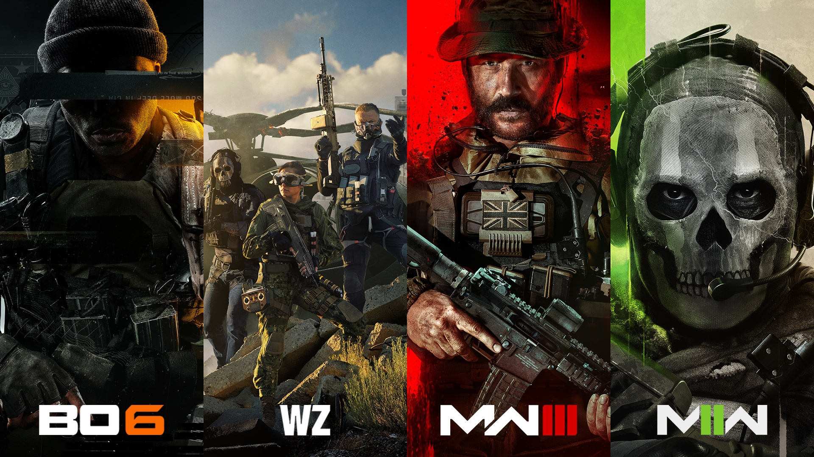
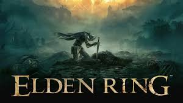
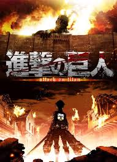
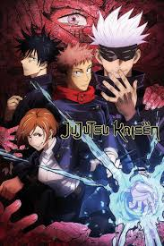
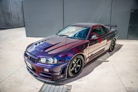
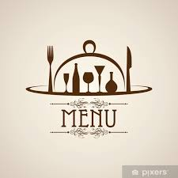

Hey!. This is where I share a bit about myself and the stuff I’m into. Nothing fancy — just me, doing my thing, learning, building, and figuring things out as I go. If you want to hang out or check out what I’m working on, you’re in the right place.
Like i said i am still a beginner learning how to code and this is my first big project...THIS SITEEE!!!.But i also dabble in other stuff such as playing alot(and i mean ALOT)of games, or watching anime, or keeping up and increasing my knowledge about cars(somewhat of a petrol-head)
Feel free to look around and check stuff out, ill hopfully be constatly updating and uploading more things on here as i venture deeper into my coading journey...ENJOYYY!!!
Hobbies and Interests
Before we dive into all the serious stuff i wanna talk about things i like other than coading.and where better to start than my favourite thing to-do, GAME!!.I love gaming and I have been playing games since as far back as I can remember.
I play almost play all types of games Online FPS, story, gatcha and even mobile games when I am on the Go
Here is a few of my favourate games in no particular order

My most played games

The best game of ALL TIMEand my favourate
recently got into them and loved this
Other than gaming i also love to watch anime or read manga.They have been some of the best form of content i have consumed and I watch/read pretty much anything be it shonin isekais or even slice of life.
Here are a few of my faves
My all time favourate anime(greatestPieceof fiction)

One of the best anime ever made and on of the greatest stories ever

Geat action, Great cast and Great story... love it
And last but not least i love cars and everything about them. I love to learn about them and how they work, and i also love to drive them. I am a bit of a petrol-head and i love to go to car meets and shows.
Here are some of the ones i would love to own one day

My all time favourate car
I come from Qatar and an offroader is a must.., and the vtc just perfection
One of the best track cars ever
Projects
Now the serious stuff, the projects, although coding is also a hobby aswell as work for me i still love it and hope to be a sucessful developer one day.
This is where ill be uploading all my projects. I am still a beginner and learning as I go, so these are not perfect but I am proud of them nonetheless.

My first project — a simple menu using HTML and some CSS. It was a great way to learn the basics of web development. (P.S. the image is clickable!)
Contact
Feel free to reach out for any inquiries, collaborations, or just to say hi!